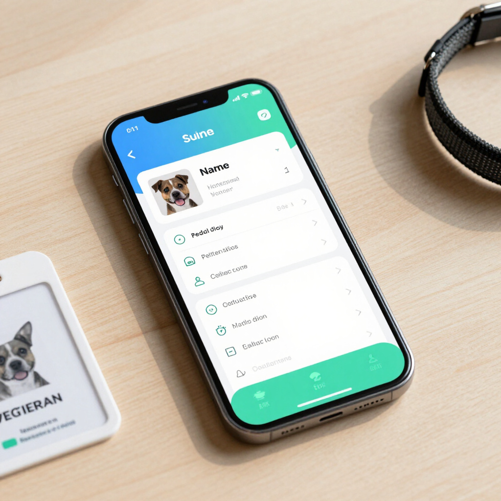

Standard Tier
Everything in Basic, plus Vetconnect for faster coordination with veterinary professionals. The Standard Tier builds on your core registration tools with Vetconnect, helping clinics and rescuers reach you even faster when your pet needs help. It’s ideal for pet owners who want an extra layer of support around their pet’s microchip.
1. Registration
Register your pet’s microchip and create a secure profile so they’re always linked back to you in Trackyn.
- Store your pet’s microchip ID, name, and key details
- Add your phone number and email for urgent contact
- Keep your pet’s profile updated as their life changes
2. Search Registry
Use the Trackyn search to confirm your pet’s registration and help vets and shelters verify your pet’s identity when they’re found.
- Confirm that your pet’s microchip is active in Trackyn
- Check that your contact details are correct
- Support clinics and rescuers in matching pets to owners
3. Report Lost Pet
If your pet goes missing, mark them as lost so anyone who scans their microchip knows to contact you immediately.
- Flag your pet as lost in the Trackyn system
- Share identifying details and notes that help others recognize your pet
- Make it easier for vets and shelters to reach you quickly
4. Update Pet/Owner Details
Keep your contact information and your pet’s details accurate so that every scan shows the right information.
- Edit your phone number, email, or address anytime
- Update your pet’s description, photo, or medical notes
- Improve the chances of a safe reunion if your pet is lost
